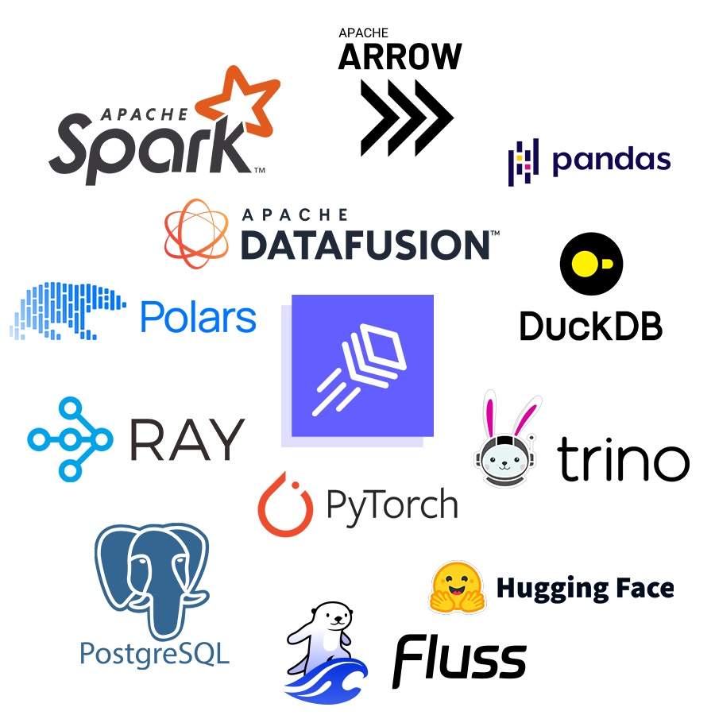

The open lakehouse format for multimodal AI.
A file format, table format, and catalog spec for building a complete lakehouse on object storage — powering vector and full-text search, feature engineering, and model training with the fast random access and scans that AI workloads need.
What is Lance?
Lance is a modern, open source lakehouse format for multimodal AI. It brings high-performance vector and full-text search, feature engineering, and model training to the lakehouse, powered by fast random access and scans — while keeping SQL analytics, ACID transactions, time travel, and integrations with open engines (Apache Spark, Ray, PyTorch, Trino, DuckDB) and open catalogs (Apache Polaris, Unity Catalog, Apache Gravitino, Hive Metastore).
Learn more in the research paper published at VLDB 2025.
Expressive hybrid search
Combine vector similarity, full-text search (BM25), and SQL analytics on the same dataset. All query types are accelerated by secondary indexes that are part of the Lance specification.
Learn more →import lance
ds = lance.dataset("s3://my-bucket/docs")
# Full text search
ds.to_table(full_text_query="machine learning")
# Hybrid search
ds.to_table(
nearest={
"column": "embedding", "q": query_vec, "k": 10
},
filter="year > 2020",
)Lightning-fast random access
100x faster random access than Parquet or Iceberg. An optimized file format plus row addressing and secondary indexes let you fetch individual records across files instantly — for ML serving, sampling, and interactive apps.
Learn more →import lance
ds = lance.dataset("s3://my-bucket/embeddings.lance")
# Access the 2nd & 51st rows
ds.take([2, 51], columns=["id", "vec_gemma3"])
# Take 1000 random samples
ds.sample(1000, columns=["id", "vec_llama"])Native multimodal data
Store images, videos, audio, text, and embeddings alongside tabular data in one format. Blob encoding handles large binary objects with lazy loading; optimized vector storage accelerates similarity search.
Learn more →import lance
import av
ds = lance.dataset("s3://my-bucket/videos.lance")
# Get blobs from the 2nd and 51st rows
blobs = ds.take_blobs("video", ids=[2, 51])
for blob in blobs:
with av.open(blob) as container:
stream = container.streams.video[0]
container.seek(start_time=500, stream=stream)Data evolution > schema evolution
Backfilling column values normally forces a full table rewrite. Lance supports efficient schema evolution with backfill — adding a column with data is just writing new Lance files to the table.
Learn more →import lance
dataset = lance.dataset("my_data.lance")
@lance.batch_udf()
def add_embeddings(batch):
vectors = model.encode(batch["text"])
return {"embedding": vectors}
dataset.add_columns(add_embeddings)Rich ecosystem integrations
Works with Pandas, Polars, Ray, and PyTorch for processing and ML. Connects to Apache DataFusion, DuckDB, Apache Spark, Trino, and Apache Flink for SQL analytics and distributed processing.
View integrations →